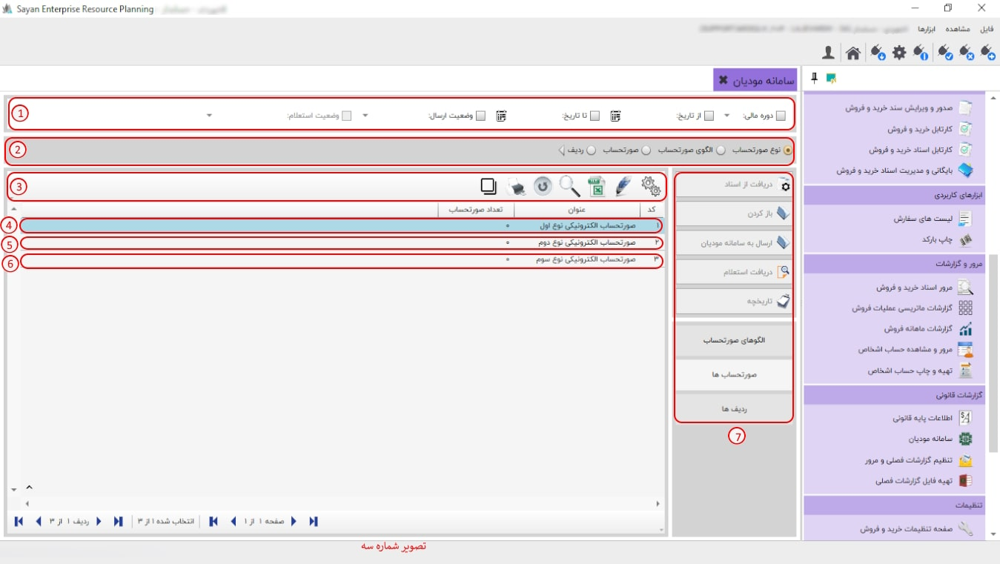

سامانه مودیان، ابزار الکترونیکی پیشرفتهای است که به منظور سادهسازی و بهینهسازی فرآیندهای مالیاتی طراحی شده است. این سامانه مودیان این امکان را به شما میدهد که اطلاعات مالیاتی خود را ثبت و مدیریت نمایید.

برای ادامه مطلب به تصویر شماره دو مراجعه نمایید.

-کادر شماه یک:در این بخش شما میتوانید نوع صورت الحساب فاکتور (اصلی) خود را انتخاب نمایید.
برای ادامه مطلب به تصویر شماره سه مراجعه نمایید.
-کادر شماره یک :اگر دوره های مالی مختلفی داشته باشید از این قسمت می توانید دوره مالی مورد نظر خود را تعیین کنید، هنگامی که دوره مالی را انتخاب می کنید سیستم فقط صورت الحساب های موجود در دوره مالی تعیین شده را نمایش می دهد.
-کادر شماره دو :در این بخش می بایست با توجه به نیازتان نوع صورت الحساب خود را انتخاب نمایید.
-کادر شماره سه:در این قسمت می بایست با توجه به نیاز تان آیکون مد نظر خود را انتخاب نمایید.
-صورت الحساب الکترونیکی نوع اول (کادر شماره چهار ):در این نوع صورتحساب، اطلاعات کامل خریدار و فروشنده ثبت میگردد. این اطلاعات شامل نوع فروش، نوع خریدار، تاریخ و زمان صورتحساب، اطلاعات هویتی خریدار و فروشنده، و مشخصات کامل خدمت میباشد.
-نکته :با توجه به اینکه در این نوع از صورتحسابهای الکترونیکی، صدور و ثبت مودیان از طریق سامانه مودیان اعتبارسنجی و پذیرش میشود، این اطلاعات بر اساس شماره اقتصادی در کارپوشه خریدار درج میگردد. در صورت تایید خریدار، این صورتحساب به عنوان اعتبار مالیاتی برای او محسوب خواهد شد.
-صورت الحساب الکترونیکی نوع دوم (کادر شماره پنج ): این صورتحساب شامل اطلاعات کامل فروشنده و کالا یا خدمت میباشد. در این نوع صورتحساب، ثبت اطلاعات خریدار اختیاری است و از بابت این صورتحساب، اعتبار مالیاتی برای خریدار قابل احتساب نمیباشد.
-صورت الحساب الکتریکی نوع سوم (کادر شماره شش): این نوع صورتحساب همان رسید پرداخت وجه صادره از دستگاه کارتخوان بانکی یا درگاه الکترونیکی پرداخت است که بر اساس مقررات اعلامی سازمان امور مالیاتی کشور، به عنوان پایانه فروشگاهی فروشنده و مودی پذیرفته میشود. در این نوع از صورتحسابهای الکترونیکی، صرفاً مبلغ پرداختی و مشخصات پذیرنده (شماره پذیرنده، شماره پایانه، شماره پیگیری، تاریخ و زمان صدور پرداخت و حداقل مشخصات فروشنده) وجود دارد و از بابت آن، اعتبار مالیاتی برای خریدار قابل احتساب نمیباشد. شایان ذکر است که این نوع صورتحساب الکترونیکی نیز دارای شماره منحصر به فرد مالیاتی است.
-کادر شماره هفت :در این بخش می توانید آیتم مورد نیاز خود را انتخاب نمایید.
برای ادامه مطلب به تصویر شماره چهار مراجعه نمایید.